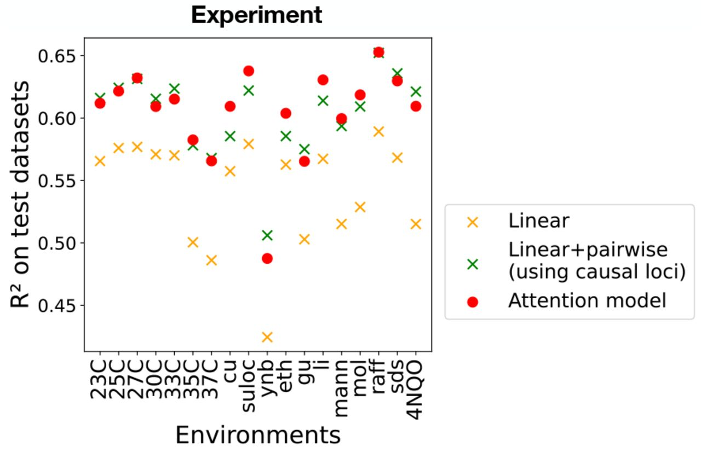
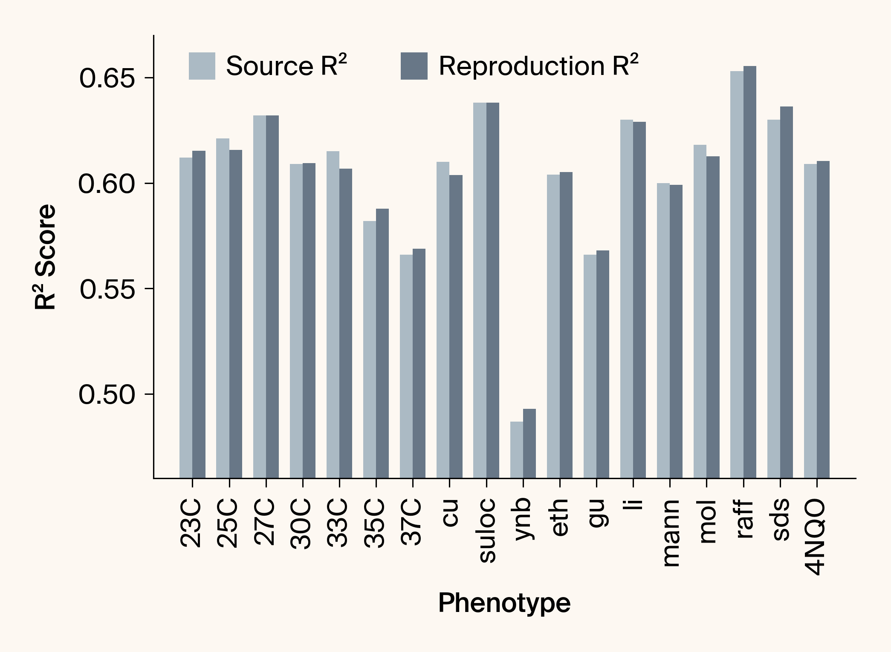
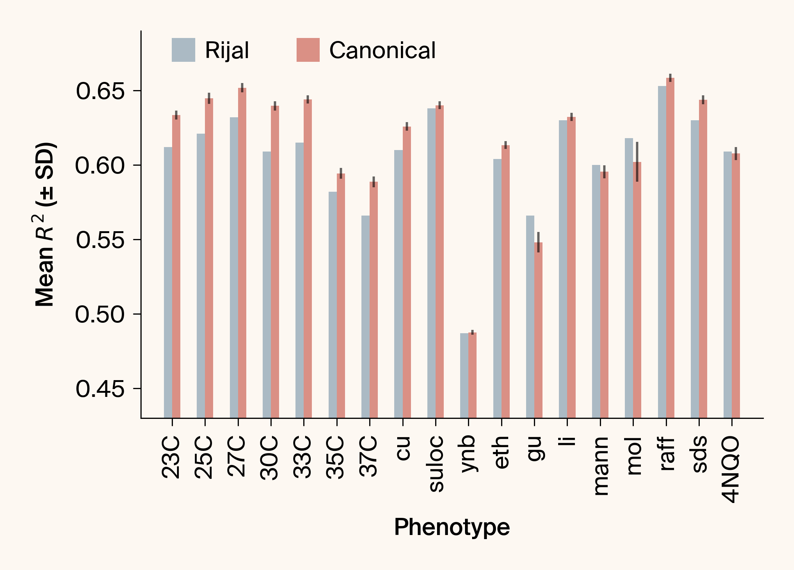
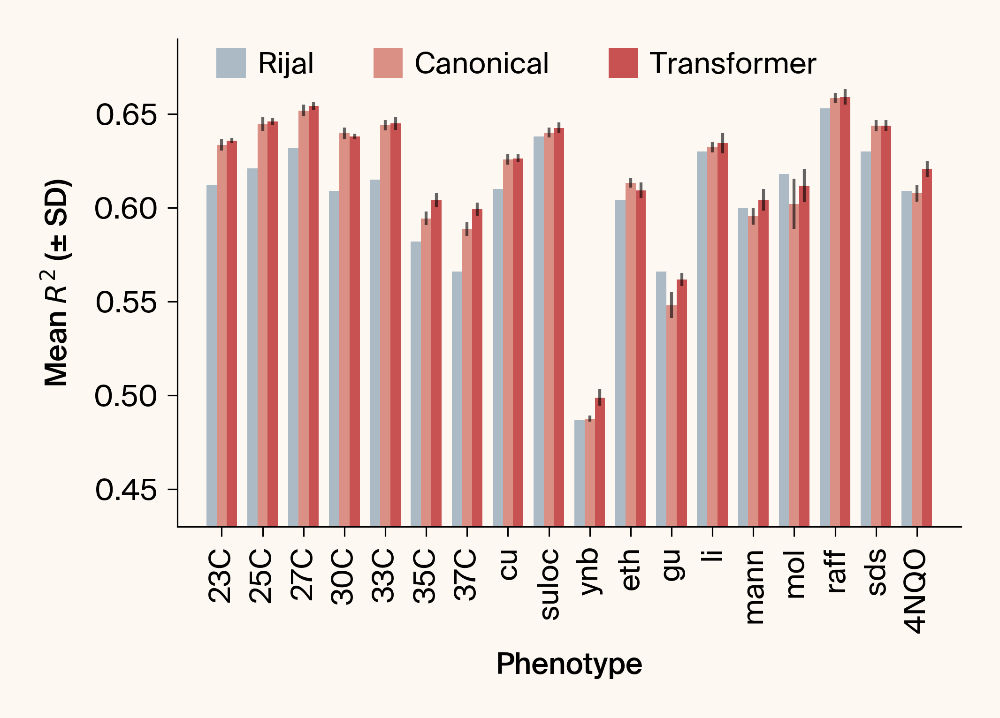

import subprocess
from pathlib import Path
dataset_dir = Path("datasets/")
if not dataset_dir.exists():
zenodo_url = "https://zenodo.org/records/15313069/files/datasets.zip"
subprocess.run(["wget", zenodo_url])
subprocess.run(["unzip", "datasets.zip"])
Path("datasets.zip").unlink()
AI usage disclosure
We used Claude to help write code and clean up code. We used ChatGPT to help write code, clean up code, write text that we edited, suggest wording ideas and then chose which small phrases or sentence structure ideas to use, expand on summary text that we provided and then edited the text it produced, help clarify and streamline text that we wrote, interpret model training results data, and suggest papers on relevant science, we did further reading, and we cited some of this literature. We also provided ChatGPT with starting text and had it rearrange that text to fit the structure of one of our pub templates. We used Gemini in similar ways to help write code, clean up code, write text that we edited, suggest wording ideas and then chose which small phrases or sentence structure ideas to use, help clarify and streamline text that we wrote, interpret model training results data, and suggest papers on relevant science, we did further reading, and we cited some of this literature. We also provided Gemini with starting text and had it rearrange that text to fit the structure of one of our pub templates, and expanded on summary text that we provided and then edited the text it produced.
Introduction
On April 11th, Rijal et al. (2025) released a preprint that introduces an application of attention mechanisms for inferring genotype-phenotype maps, particularly focusing on capturing complex epistatic interactions. This work sparked considerable interest given our ongoing exploration of nonlinear genotype-phenotype models.
By training on 100,000 yeast segregants over 18 growth phenotypes, Rijal et al. (2025) demonstrated that an attention-based architecture extracts more epistatic signals than conventional linear methods, and does so with far fewer parameters than the full second-order regression that has become a norm in quantitative genetics. Their study therefore provides an important proof-of-principle for deep-learning architectures being able to cope with linkage disequilibrium, noise, and sparse high-order interactions in large-scale genotype-phenotype data.
That success naturally raised our curiosity. The network they used omits several standard transformer components that brought attention into the limelight: skip connections, layer normalisation, and feed-forward sub-layers (Vaswani et al., 2017). Given the cross-domain success that transformers have seen, we wondered: Could the performance be further improved by replacing their model with a standard “vanilla” transformer architecture? We found out. Also, along the way, we uncovered a missed opportunity by Rijal et al. (2025) to reinforce the learning signal by properly leveraging cross-phenotype genetic correlations, which led to significant performance gains.
The dataset
The experimental data used in Rijal et al. (2025) comes from the work of Nguyen Ba et al. (2022), who performed a large-scale quantitative trait locus (QTL) study in yeast. In short, they measured the growth rates of ~100,000 yeast segregants across 18 conditions and for ~40,000 loci, creating a massive dataset suitable for mapping genotype to phenotype.
Due to extensive linkage disequilibrium (LD), the loci in the dataset are highly correlated with each other. To create a set of independent loci, Rijal et al. (2025) defined a set of loci such that the correlation between the SNPs present at any pair of loci is less than 94%, resulting in a set of 1164 “independent” loci.
We were unable to find the set of loci, nor the genotypic and phenotypic data used for training, so we located the raw data that Nguyen Ba et al. (2022) originally uploaded alongside their study, then used this notebook uploaded by Rijal et al. (2025) to recapitulate the 1164 loci. To save everyone else the trouble, we uploaded the train, test, and validation datasets we’re pretty sure Rijal et al. (2025) used in their study.
You can find the data here: https://zenodo.org/records/15313069
We’ll use this data in what follows, so let’s go ahead and download it into the current working directory:
| Phenotype | Source R² | |
|---|---|---|
| 0 | 23C | 0.612 |
| 1 | 25C | 0.621 |
| 2 | 27C | 0.632 |
| 3 | 30C | 0.609 |
| 4 | 33C | 0.615 |
| 5 | 35C | 0.582 |
| 6 | 37C | 0.566 |
| 7 | cu | 0.610 |
| 8 | suloc | 0.638 |
| 9 | ynb | 0.487 |
| 10 | eth | 0.604 |
| 11 | gu | 0.566 |
| 12 | li | 0.630 |
| 13 | mann | 0.600 |
| 14 | mol | 0.618 |
| 15 | raff | 0.653 |
| 16 | sds | 0.630 |
| 17 | 4NQO | 0.609 |
Reproducing single phenotype results
Let’s first try and reproduce the single-phenotype attention model performances observed in Figure 3 (red dots). This will give us the confidence to know we both (a) correctly reverse-engineered the specifics of their training/validation/test datasets and (b) accurately implemented their model.

Note that a separate model is trained on each phenotype, so reproducing this figure involves training 18 models. To do this, we need to create config objects specifying each model architecture and how the training should proceed.
Code
import attrs
from analysis.base import ModelConfig, TrainConfig
from analysis.dataset import phenotype_names
model_config = ModelConfig(
model_type="rijal_et_al",
seq_length=1164,
embedding_dim=13,
num_layers=3,
)
# This template config sets all the shared parameters.
train_template_config = TrainConfig(
data_dir=dataset_dir,
save_dir=Path("models/fig3"),
name_prefix="fig3_23C",
phenotypes=["23C"],
optimizer="adam",
batch_size=64,
learning_rate=0.001,
lr_schedule=False,
weight_decay=0.0,
max_epochs=200,
gradient_clip_val=0,
use_cache=True,
use_modal=False,
)
jobs = []
for phenotype in phenotype_names:
# Each train config needs to set its corresponding phenotype(s).
phenotype_config = attrs.evolve(
train_template_config, phenotypes=[phenotype], name_prefix=f"fig3_{phenotype}"
)
jobs.append((model_config, phenotype_config))With each job properly configured, we can train a model for each phenotype:
Code
from analysis.train import run_trainings
model_dirs = run_trainings(jobs)Pre-trained model 'fig3_23C' found. Returning path.
Pre-trained model 'fig3_25C' found. Returning path.
Pre-trained model 'fig3_27C' found. Returning path.
Pre-trained model 'fig3_30C' found. Returning path.
Pre-trained model 'fig3_33C' found. Returning path.
Pre-trained model 'fig3_35C' found. Returning path.
Pre-trained model 'fig3_37C' found. Returning path.
Pre-trained model 'fig3_cu' found. Returning path.
Pre-trained model 'fig3_suloc' found. Returning path.
Pre-trained model 'fig3_ynb' found. Returning path.
Pre-trained model 'fig3_eth' found. Returning path.
Pre-trained model 'fig3_gu' found. Returning path.
Pre-trained model 'fig3_li' found. Returning path.
Pre-trained model 'fig3_mann' found. Returning path.
Pre-trained model 'fig3_mol' found. Returning path.
Pre-trained model 'fig3_raff' found. Returning path.
Pre-trained model 'fig3_sds' found. Returning path.
Pre-trained model 'fig3_4NQO' found. Returning path.
A note about training behavior
The above code will initiate training for all configured jobs, with important considerations:
- Caching: Since
train_config.use_cache = Trueand these models are stored in the GitHub repository, executing this locally will use cached models instead of performing expensive retraining - Training Duration: Each training job takes approximately 2.5 hours to complete on an A10G GPU, so running all jobs without caching would require significant time
- Compute Configuration: In our production environment, we set
train_config.use_modal = Trueto distribute compute jobs via Modal. For compatibility with different compute architectures, this notebook usestrain_config.use_modal = Falseby default.
Inside each run directory is a metrics.csv that we can get the test dataset \(R^2\) from and compare directly against Figure 3 from Rijal et al. (2025).
Code
from pathlib import Path
import arcadia_pycolor as apc
import matplotlib as mpl
import matplotlib.pyplot as plt
import numpy as np
import pandas as pd
apc.mpl.setup()
def get_test_r2(model_dir: Path) -> float:
metrics = pd.read_csv(model_dir / "metrics.csv")
return float(metrics.loc[metrics["metric"] == "test_r2", "value"].iloc[0])
fig3_reproduction_r2 = [get_test_r2(d) for d in model_dirs]
fig3_results["reproduction R2"] = fig3_reproduction_r2
df = pd.DataFrame(fig3_results)
x = np.arange(len(df))
width = 0.35
with mpl.rc_context({"figure.facecolor": apc.parchment}):
plt.figure(dpi=300)
plt.bar(x - width / 2, df["source R2"], width, label="Source R²", color=apc.cloud)
plt.bar(x + width / 2, df["reproduction R2"], width, label="Reproduction R²", color=apc.steel)
plt.xlabel("Phenotype")
plt.ylabel("R² Score")
plt.ylim(0.46, 0.67)
plt.xticks(x, df["phenotype"], rotation=90)
plt.legend(loc=(0.05, 0.90), ncol=2)
plt.tight_layout()
plt.show()

With an \(n\) of 1, we can’t assess reproducibility rigorously. Even so, our re-implementation matches the published numbers very closely. Here are some numbers on the phenotype with the largest deviation:
Code
deltas = (df["source R2"] - df["reproduction R2"]).abs()
max_idx = deltas.argmax()
max_delta = deltas.max()
phenotype_with_largest_delta = df["phenotype"].iloc[max_idx]
percent_diff = 100 * max_delta / df["source R2"].iloc[max_idx]
print("Biggest discrepenacy:")
print(f"- Phenotype: {phenotype_with_largest_delta}")
print(f"- R2 difference: {max_delta:.3f}")
print(f"- Percent difference: {percent_diff:.1f}")Biggest discrepenacy:
- Phenotype: 33C
- R2 difference: 0.008
- Percent difference: 1.3Overall, these results help assure us that:
- The train/validation/test partitions are identical, or at least functionally equivalent
- Our code reproduces the authors’ architecture and training procedure.
With this validated baseline in place, we’re now confident in using it as the starting point for modifying the architecture.
Canonical ML components outperform bespoke customization
The Rijal et al. (2025) model architecture uses non-standard components. To test whether these idiosyncratic choices are actually helpful, we replaced each one with a standard, “textbook” alternative and measured the collective impact on predictive accuracy.
| Non-standard element in Rijal et al. | What it does | Canonical replacement we tried |
|---|---|---|
Random projection of a diagonal genotype matrix X(g)·R |
Encodes each locus as a row of a fixed random matrix R, multiplied by the allele sign (±1). |
A learned embedding table nn.Embedding(L, D) whose rows are multiplied by the allele sign. |
| Concatenated column of ones | Appends a constant 1 to every token to mimic an explicit bias term (Appendix F in the original paper). | Simply enable the bias in the linear Q, K, V projections (nn.Linear(..., bias=True)). |
| Phenotype represented as an input token | Adds one-hot phenotype tokens to the sequence, forcing attention layers to discover gene × phenotype interactions. | Condition the model after the attention block: predict all phenotypes jointly from a pooled sequence representation (see below). |
| Flattened fitness matrix | Treats each (genotype, phenotype) pair as an independent sample; the network outputs one scalar at a time. | Mean-pool the token embeddings → (B, D) and use a single linear layer D → 18 so all phenotypes are predicted simultaneously. |
Why predict all phenotypes at once?
The measured phenotypes are likely to be genetically correlated due to biological processes such as pleiotropy. Consequently, knowing that a mutation hurts growth in one condition has the potential to inform its effect in another. A shared output head lets the network exploit this mutual information, whereas the original set-up can only share knowledge through the shared attention weights. Our phenotype-phenotype autoencoder study (Avasthi et al., 2023) showed significant prediction benefits when accounting for phenotypic covariation, so we’re expecting the same thing to be true here, too.
Experimental protocol
The codebase contains a new architecture with the above modifications. Let’s test its performance with the following changes to the training:
- Increase the number of phenotypes from \(1\) to \(18\) (all).
- Correspondingly increase the hidden dimension from \(d=12\) to \(d=128\).
- Decrease the learning rate 10-fold, from \(1 \times 10^{-3}\) to \(1 \times 10^{-4}\).
Finally, because Figure 1 hints at potentially significant run-to-run variance, let’s run five replicates, where each replicate differs only in its initializing seed (the train/validation/test splits are held constant).
Code
NUM_REPLICATES = 5
jobs = []
for i in range(NUM_REPLICATES):
replicate_id = f"{i:02d}"
job_name_prefix = f"std_d128_rep_{replicate_id}"
model_config = ModelConfig(
embedding_dim=128,
model_type="modified",
seq_length=1164,
num_layers=3,
)
train_config = attrs.evolve(
train_template_config,
save_dir=Path("models/canonical"),
phenotypes=phenotype_names,
name_prefix=job_name_prefix,
optimizer="adamw",
max_epochs=100,
)
jobs.append((model_config, train_config))
print(f"\nGenerated {len(jobs)} job configurations.")
Generated 5 job configurations.
Note
If you’re running this yourself and aren’t interested in replicates, you can reduce the amount of required compute by setting NUM_REPLICATES in the above cell to 1.
Now, let’s run the experiment:
Code
model_dirs = run_trainings(jobs)Pre-trained model 'std_d128_rep_00' found. Returning path.
Pre-trained model 'std_d128_rep_01' found. Returning path.
Pre-trained model 'std_d128_rep_02' found. Returning path.
Pre-trained model 'std_d128_rep_03' found. Returning path.
Pre-trained model 'std_d128_rep_04' found. Returning path.Consistent gains across phenotypes
Figure 2 shows that swapping the custom choices in Rijal et al. (2025) for a canonical embedding \(\rightarrow\) mean-pool \(\rightarrow\) linear-head model and predicting all 18 phenotypes jointly yields a boost in predictive power across the board:
Code
label_lookup = {
"std": "Canonical",
}
def get_phenotype_r2_data(model_dir: Path) -> float:
# Determine the architecture and replicate number from model directory name
dir_name = model_dir.parent.parent.name # e.g., "std_d128_rep_09"
variant_key, _, rep_str = dir_name.rpartition("_rep_")
base_arch_key, _, _ = variant_key.rpartition("_d")
architecture_label = label_lookup[base_arch_key]
# Load and wrangle the metrics.csv. Keep only the per-phenotype test R2 values.
df = pd.read_csv(model_dir / "metrics.csv")
df = df[df["metric"].str.startswith("test_r2_")]
df["phenotype"] = df["metric"].str[8:]
df.drop("metric", axis=1, inplace=True)
df.rename(columns={"value": "r2"}, inplace=True)
df["architecture"] = architecture_label
df["replicate"] = int(rep_str)
df["r2"] = df["r2"].astype(float)
return df
# Concat the phenotype data across all models
canonical_plot_data = pd.concat([get_phenotype_r2_data(model_dir) for model_dir in model_dirs])
# Calculate the mean and standard error R2 over replicates
canonical_plot_data = (
canonical_plot_data.groupby(["architecture", "phenotype"])["r2"]
.agg(mean_r2="mean", std_r2="std")
.reset_index()
)
# Concatenate the manually scraped Fig3 R2s
rijal_r2s = fig3_results.copy(deep=True)
rijal_r2s.drop("reproduction R2", axis=1, inplace=True)
rijal_r2s.rename(columns={"source R2": "mean_r2"}, inplace=True)
rijal_r2s["std_r2"] = 0.0
rijal_r2s["architecture"] = "Rijal"
canonical_plot_data = pd.concat([canonical_plot_data, rijal_r2s])
# Plotting code.
canonical_plot_data["phenotype"] = pd.Categorical(
canonical_plot_data["phenotype"], categories=phenotype_names, ordered=True
)
arch_order = ["Rijal", "Canonical"]
x = np.arange(len(phenotype_names))
width = 0.25
color_map = {
"Rijal": apc.cloud,
"Canonical": apc.mars,
}
with mpl.rc_context({"figure.facecolor": apc.parchment}):
plt.figure(dpi=300)
for i, arch in enumerate(arch_order):
sub = (
canonical_plot_data[canonical_plot_data["architecture"] == arch]
.set_index("phenotype")
.reindex(phenotype_names)
)
plt.bar(
x + (i - 0.5) * width, # centre bars around tick
sub["mean_r2"],
width,
yerr=sub["std_r2"],
ecolor="#00000099",
error_kw=dict(elinewidth=1.5),
label=arch,
color=color_map[arch],
)
plt.xticks(x, phenotype_names, rotation=90)
plt.xlabel("Phenotype")
plt.ylabel("Mean $R^2$ (± SD)")
plt.ylim(0.43, 0.69)
plt.legend(loc=(0.05, 0.92), ncol=3)
plt.tight_layout()
plt.show()

Important caveat on the baseline we compare against
The numbers labeled “Rijal” in Figure 2 come from the single-phenotype models reported in their Figure 3. Rijal et al. (2025) do develop a multi-phenotype architecture, but careful inspection of their code shows that it still emits a scalar output per forward pass and simply loops over phenotypes at train time. In other words, each (genotype, phenotype) pair is treated as an independent sample. The predictive power of this model is shown in their Figure 4, and is actually worse than the single-phenotype models at predicting any given phenotype.
Because our goal is to test whether a genuine multi-output head + canonical components confer an advantage, we chose the best-performing baseline available (their single-phenotype models). The comparison is therefore conservative: any gains we report would be larger, not smaller, if the authors’ scalar multi-phenotype model were used as the reference.
Quantifying which changes contributed to these gains would require an ablation study, however our hunch is that the primary gains come from cross-phenotype genetic correlations. For instance we note that some of the most consistent gains we see in our implementation of the model come from fitness measurements at different temperatures, a set of phenotypes that is almost certainly impacted by pleiotropic sets of genes. Joint training allows the network to transfer information among genetically correlated traits, an advantage that the single-output baseline can’t exploit beyond implicit relationships learned through shared attention weights.
Taken together, these results validate the canonical multi-output model as a stronger starting point than the original design.
A vanilla transformer architecture
The current architecture still departs from the reference transformer in several respects: it omits residual connections, layer normalization, and position-wise feed-forward blocks. The logical next experiment is therefore to level up to a bona-fide vanilla transformer, preserving the current tokenization while adding:
- Residual (skip) connections and pre-LayerNorm,
- Feed-forward sub-layers with RELU activations,
- Scaled dot-product attention with the canonical \(1/\sqrt{d}\) factor,
- Dropout and weight-decay for regularization to prevent overfitting.
It’s worth noting that transformers excel at sequence modeling—and sequences are ordered collections. While the loci in this dataset could be attributed chromosomal coordinates, and therefore in a sense an ordering, like Rijal et al. (2025), we’re treating the loci as an unordered collection. Thus, we don’t add any positional encodings, either in the form of absolute or relative positional encodings.
Code
NUM_REPLICATES = 5
jobs = []
for i in range(NUM_REPLICATES):
replicate_id = f"{i:02d}"
job_name_prefix = f"xformer_rep_{replicate_id}"
model_config = ModelConfig(
embedding_dim=256,
model_type="transformer",
seq_length=1164,
num_layers=3,
nhead=4,
dim_feedforward=1024,
)
train_config = attrs.evolve(
train_template_config,
save_dir=Path("models/transformer"),
phenotypes=phenotype_names,
name_prefix=job_name_prefix,
optimizer="adamw",
max_epochs=80,
)
jobs.append((model_config, train_config))
print(f"\nGenerated {len(jobs)} job configurations.")
Generated 5 job configurations.Code
model_dirs = run_trainings(jobs)Pre-trained model 'xformer_rep_00' found. Returning path.
Pre-trained model 'xformer_rep_01' found. Returning path.
Pre-trained model 'xformer_rep_02' found. Returning path.
Pre-trained model 'xformer_rep_03' found. Returning path.
Pre-trained model 'xformer_rep_04' found. Returning path.Figure 3 shows the change in performance:
Code
label_lookup = {
"std": "Canonical",
"xformer": "Transformer",
}
def get_phenotype_r2_data_xformer(model_dir: Path) -> float:
# Determine the architecture and replicate number from model directory name
dir_name = model_dir.parent.parent.name # e.g., "std_d128_rep_09"
variant_key, _, rep_str = dir_name.rpartition("_rep_")
architecture_label = label_lookup[variant_key]
# Load and wrangle the metrics.csv. Keep only the per-phenotype test R2 values.
df = pd.read_csv(model_dir / "metrics.csv")
df = df[df["metric"].str.startswith("test_r2_")]
df["phenotype"] = df["metric"].str[8:]
df.drop("metric", axis=1, inplace=True)
df.rename(columns={"value": "r2"}, inplace=True)
df["architecture"] = architecture_label
df["replicate"] = int(rep_str)
df["r2"] = df["r2"].astype(float)
return df
# Concat the phenotype data across all models
df = pd.concat([get_phenotype_r2_data_xformer(model_dir) for model_dir in model_dirs])
df = df.groupby(["architecture", "phenotype"])["r2"].agg(mean_r2="mean", std_r2="std").reset_index()
# Concat with existing canonical plot data
xformer_plot_data = pd.concat([df, canonical_plot_data])
# Plotting code.
xformer_plot_data["phenotype"] = pd.Categorical(
xformer_plot_data["phenotype"], categories=phenotype_names, ordered=True
)
arch_order = ["Rijal", "Canonical", "Transformer"]
x = np.arange(len(phenotype_names))
width = 0.25
color_map = {
"Rijal": apc.cloud,
"Canonical": apc.mars,
"Transformer": apc.dragon,
}
with mpl.rc_context({"figure.facecolor": apc.parchment}):
plt.figure(dpi=300)
for i, arch in enumerate(arch_order):
sub = (
xformer_plot_data[xformer_plot_data["architecture"] == arch]
.set_index("phenotype")
.reindex(phenotype_names)
)
plt.bar(
x + (i - 1) * width, # centre bars around tick
sub["mean_r2"],
width,
yerr=sub["std_r2"],
ecolor="#00000099",
error_kw=dict(elinewidth=1.5),
label=arch,
color=color_map[arch],
)
plt.xticks(x, phenotype_names, rotation=90)
plt.xlabel("Phenotype")
plt.ylabel("Mean $R^2$ (± SD)")
plt.ylim(0.43, 0.69)
plt.legend(loc=(0.05, 0.92), ncol=3)
plt.tight_layout()
plt.show()

The full transformer nudges performance above the already-improved canonical model across most phenotypes (Figure 3). The lift is apparent, but no stepwise performance gains are observed. There’s undoubtedly a lot of room for improvement: we made no attempt at hyper-parameter tuning beyond some cursory investigations of dropout and weight-decay (neither of which positively affected performance), and all other parameters were guessed zero shot.
Conclusion and outlook
Our central question was simple: do off-the-shelf transformer components—and a genuine multi-output head—move the needle on genotype to phenotype prediction?
The answer is an emphatic yes.
Why multi-output matters
Leveraging mutual information between genetically correlated phenotypes represents a natural way of boosting model performance when training data is limited. In the context of plant/animal breeding, multi-trait genomic prediction has been well established to improve the predictive power of linear models (particularly for low heritability traits) (Jia and Jannink, 2012). Our own work with phenotype-phenotype autoencoders has demonstrated that encoding multiple phenotypes jointly lets an auto-encoder predict individual phenotypes with very high accuracy, particularly as the number of phenotypes considered simultaneously increases (Avasthi et al., 2023). These observations are examples of the benefits of multi-task learning, which have long been appreciated in ML literature (Caruana, 1997). Our presented results are no different: when the network can see all 18 phenotypes at once, shared genetic effects (either through pleiotropy or in some instances through LD (Chebib and Guillaume, 2021)) reinforce, rather than fragment, the learning signal.
A foundation, not a finish line
A natural next step given these results is to test cross-environment transfer learning in our multi-task model. Rijal et al. (2025) demonstrated that transfer learning was possible across temperature growth conditions even with a multi-environment model that did not outperform a single-environment model. Given the overall superior performance of the models we present here, they may be particularly well suited for fitness prediction for novel phenotypes with even fewer fine-tuning observations than used by Rijal et al. (2025).
Finally, it would be interesting to evaluate where the performance boost of multi-task learning comes from, from a quantitative genetics perspective. Phenotypic variance can generally be broken down into additive (\(G\)), epistatic (\(G \times G\)) and gene by environment (\(G \times E\)) components (ignoring higher order terms for simplicity). Intuitively, we might expect multi-trait learning to excel at explaining \(G\) and \(G \times G\) variance components that are constant across environments, however it’s possible that \(G \times E\) variance is also better explained, as multi-task learning benefits are known to extend to even unrelated tasks (Paredes et al., 2012). We suspect this could be investigated through ablation studies that track environment specific prediction outcomes.
There is also still plenty of headroom for improving the model:
- No hyper-parameter search was attempted for the transformer; depth, head count, LR schedules, dropout rates, and layer widths all remain untouched.
- How far can the canonical model be pushed? Maybe the transformer is overkill.
- The model treats the loci as an unordered collection. It’s possible that adding chromosomal coordinates or some kind of other positional encoding could let the model sing.
- We haven’t experimented with more sophisticated feature selection methods for reducing the number of loci prior to model training, a task that may be particularly fruitful for improving the ability of models to capture pairwise and higher order epistasis.
An invitation to build further
All code, configs, and cached model checkpoints are available in this notebook’s repository. The Appendix documents the engineering decisions that should help orient you to the codebase.
Appendix: a codebase primer
Note
This section elaborates on engineering details that will be of interest to those planning to reproduce, modify, or build off of this research.
Rather than building off the Rijal et al. (2025) notebook files, we re-implemented their code into our own codebase to improve code quality and make room for our modifications and experimentation. Here is a very high-level summary of the changes we made:
- Added configuration dataclasses to co-localize tunables
- Saved the training/validation/test datasets to file to avoid splitting on-the-fly
- Created PyTorch dataloaders to manage accession, batching, and data shuffling
- Automated the training loop with PyTorch Lightning, creating separation between the training loop and the model logic
- Added canonical learning parameters like early stopping, learning rate scheduling, gradient norm clipping, weight decay, and more
- Generalized the Rijal et al. (2025) model with toggleable skip connections, layer normalization, scaled attention, dropout rate, and more
The upshot is that we’re proud of this code and think it establishes a much-needed foundation that can be used to build off the research seeded by Rijal et al. (2025).
Training models
In the analysis above, we illustrated how multiple training jobs can be run using the high level entrypoint, run_trainings, that:
- Trains a model for a given set of phenotypes
- Determines the best model, defined as the model with the lowest loss (MSE) calculated over the validation dataset
- Reports the \(R^2\) for the test dataset using the best model
- Saves the model to file for downstream use
The codebase also exposes equivalent behavior through a command-line interface (CLI). It can be accessed via:
$ python -m analysis.train --helpDistributed computing
We performed the analysis using Modal’s cloud infrastructure to distribute computations across GPUs, allowing us to rapidly measure performance across many different model architectures and training specifications. Whether you want to train with or without Modal can be toggled by the attribute train.use_modal. By default, Modal execution is disabled. The downside is that your training jobs will run in serial, rather than being distributed across different machines.
Caching behavior
We implemented a simple cache mechanism that avoids training if a model directory for a given training config already exists. We did this so that GPUs aren’t a requirement for engaging with this research.
train_config.use_cache = True(default): Skips retraining if a model with the same configuration already existstrain_config.use_cache = False: Forces retraining regardless of existing models
Note
All training runs in this analysis use the default caching mode (train_config.use_cache = True), and the results are git tracked. As a result, if you execute this notebook locally, these models will be loaded from cache rather than retrained.
References
Avasthi P, Mets DG, York R. (2023). Harnessing genotype-phenotype nonlinearity to accelerate biological prediction. https://doi.org/10.57844/arcadia-5953-995f
Caruana R. (1997). Multitask Learning. https://doi.org/10.1023/A:1007379606734
Chebib J, Guillaume F. (2021). Pleiotropy or linkage? Their relative contributions to the genetic correlation of quantitative traits and detection by multitrait GWA studies. https://doi.org/10.1093/genetics/iyab159
Jia Y, Jannink J-L. (2012). Multiple-trait genomic selection methods increase genetic value prediction accuracy. https://doi.org/10.1534/genetics.112.144246
Nguyen Ba AN, Lawrence KR, Rego-Costa A, Gopalakrishnan S, Temko D, Michor F, Desai MM. (2022). Barcoded bulk QTL mapping reveals highly polygenic and epistatic architecture of complex traits in yeast. https://doi.org/10.7554/eLife.73983
Paredes BR, Argyriou A, Berthouze N, Pontil M. (2012). Exploiting unrelated tasks in multi-task learning
Rijal K, Holmes CM, Petti S, Reddy G, Desai MM, Mehta P. (2025). Inferring genotype-phenotype maps using attention models. https://doi.org/10.1101/2025.04.11.648465
Vaswani A, Shazeer N, Parmar N, Uszkoreit J, Jones L, Gomez AN, Kaiser L, Polosukhin I. (2017). Attention is all you need